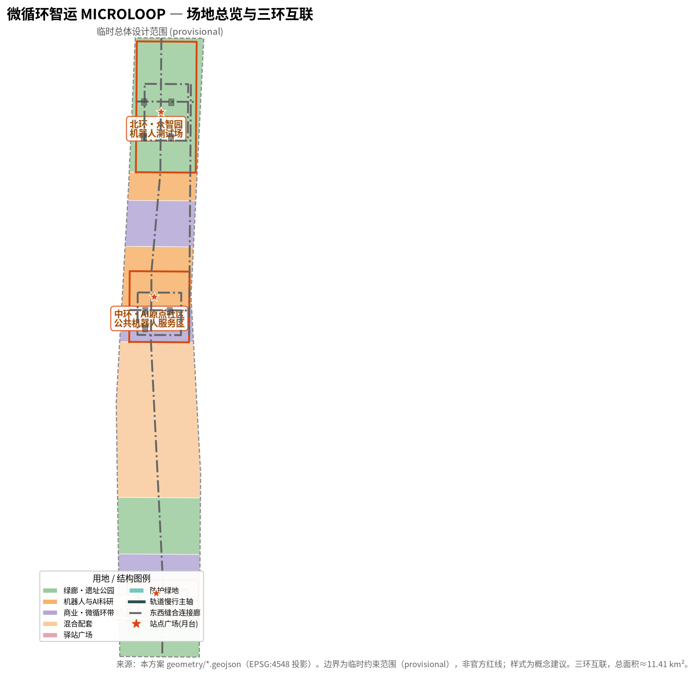
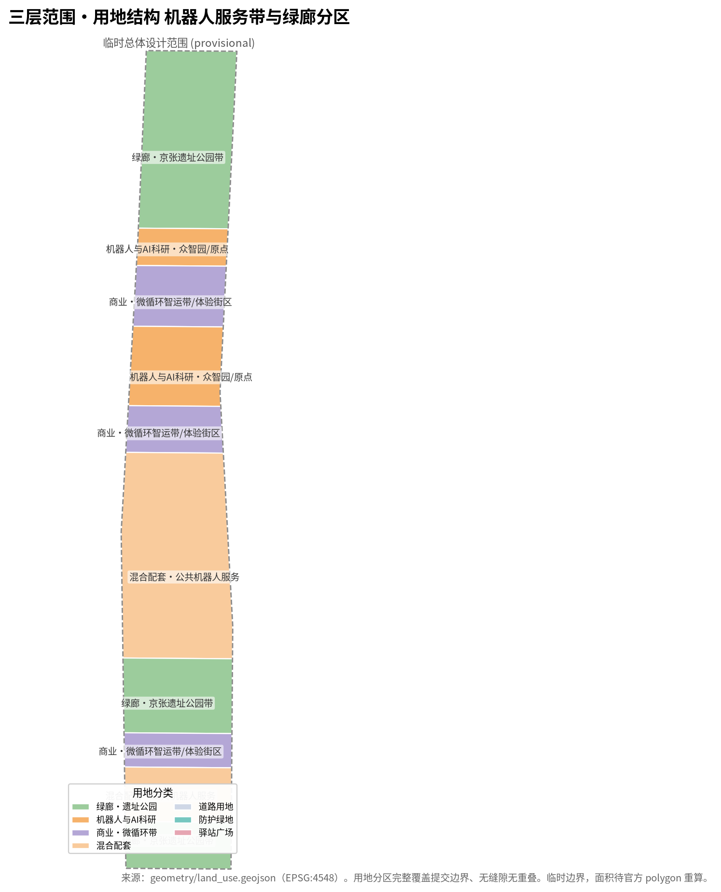
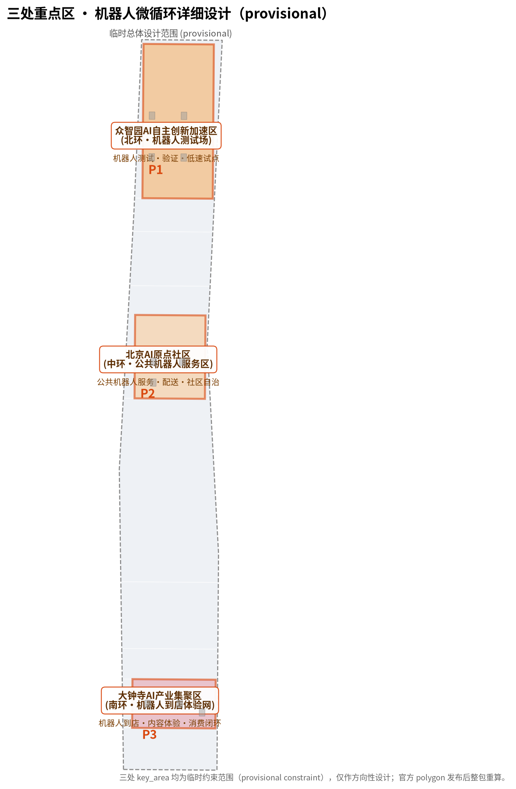
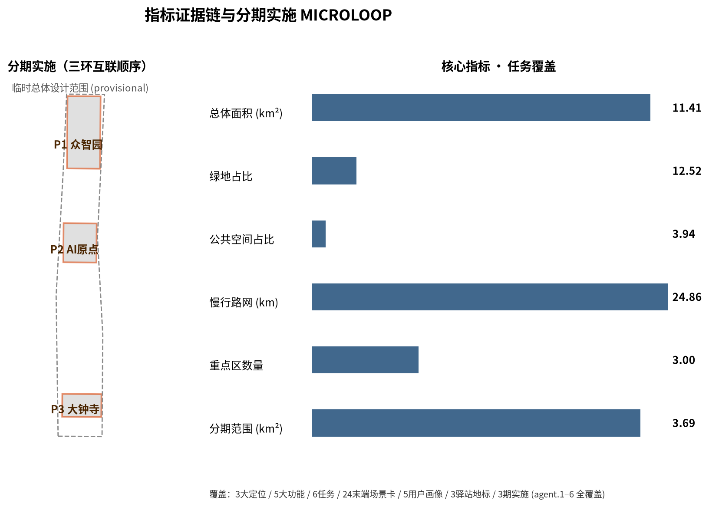

MICROLOOP Jing-Zhang: a Low-Speed Robot & AV End-Micro-Loop Network on the Jing-Zhang AI Innovation Belt
Taking \"Micro-Loop Logistics MICROLOOP\" as the overall concept, this proposal organizes the three-area-two-wing Jing-Zhang AI innovation belt into a low-speed robot + unmanned shuttle end-micro-loop network: delivery, inspection, guide, cleaning, and accessible companion robots run on loop roads within the three key areas, and low-speed autonomous shuttles link the hubs, forming a two-layer flow of trunk corridor plus end micro-loop. It coordinates a 43.6 km² research scope, an 11.4 km² overall design scope, and three 368.4 ha key areas through three interconnected loops, robot hubs, public robot service areas, and 24 end scenarios. All spatial proposals are conceptual (provisional boundary) and do not replace formal planning.
MICROLOOP Jing-Zhang: a Low-Speed Robot & AV End-Micro-Loop Network on the Jing-Zhang AI Innovation Belt
Design Basis and Source List
This proposal takes as its primary basis the "Centennial Jing-Zhang AI Innovation Belt International Urban Design Call for Qualifications" announcement of the Haidian Branch of the Beijing Municipal Commission of Planning and Natural Resources 来源, and the maintainer-registered three-level scopes, three key areas, enums, metrics, sources, and professional-standard checklist as machine-readable basis 来源. The agent-facing open-call taskbook (agent.1–agent.6) directly informs six creative and operational tasks 来源. All formal conclusions must trace back to materials marked usable_for_formal="yes" in data/source_registry.json; provisional-only and background-only materials are used only for generation, display, and design discussion and must not be elevated to official boundaries, statutory plans, or formal scoring evidence 来源.
It must be noted that the official SITE_BOUNDARY and the three KEY_AREA precise polygons have not yet been released publicly (the qualification package is password-protected and no public precise boundary was obtained at retrieval). This proposal therefore uses a rough provisional boundary (provisional constraint) inferred and cross-checked by the maintainer from the announcement's textual limits and approximate areas in EPSG:4548 来源来源来源. It is used for AI generation, display, and interim self-check only, and must not be treated as an official redline, approval basis, or precise area recalculation basis; scopes, tasks, source-use boundaries, and the missing-data checklist can also be traced to the agent-readable fact-pack navigation layer 来源. Once official polygons are released, the site boundary, land use, roads, green/public space, buildings, phasing, and all area/ratio metrics must be recalculated package-wide 指标.
The proposal conducts conceptual research following the framework of a regulatory detailed plan and integrated implementation plan, adopting the depth-organization methods and professional standards of 标准 and 标准 as references, with land-use classification following 标准; this is conceptual research and does not constitute a statutory plan, implementation deliverable, or approval basis. Robot low-speed pilots and public services follow the compliance boundary of relevant accessibility and elderly-friendly regulations. The complete standard list is in standard_matrix.json. The structured indexes of standards, tasks, sources, metrics, and design depth are stored respectively in standard_matrix.json, compliance_matrix.json, sources.json, metrics.json, and design_depth_matrix.json; the prose only places a few verifiable references at key judgments and does not stack machine indexes.

Three-Level Scope Framework
The proposal is organized by the three-level scopes defined in the announcement: the coordinated research area (43.6 km², bounded by the 5th Ring Road to the north, the Jingzang Expressway to the east, Xizhimen Outer Street to the south, and Wanquanhe Road to the west) answers the strategic question of how low-speed robots and automated driving reshape urban end-of-line flows 指标; the overall design area (11.4 km², the 1–2 km city and industrial zone around the Jing-Zhang Heritage Park) translates the strategy into an end-of-line logistics, public-robot-service, and slow-shuttle pilot network 空间数据; and the key-area scope (368.4 ha, from north to south: Zhongzhiyuan, Beijing AI Origin Community, and Dazhongsi) works out the robot loop roads and hubs within each district 空间数据.
The three scopes are not a fragmented set of drawings: the coordinated research scope decides end-of-line flow judgments, the overall design scope translates them into robot service areas and micro-loop corridors, and the key areas validate low-speed shuttle feasibility at station scale. The package maps announcement items 1.3, 1.4, 1.5 and agent.1–agent.6 item by item to sections, layers, metrics, drawings, and HTML evidence in compliance_matrix.json 深度.
Because the three key-area polygons are provisional rough rectangles, this proposal provides only directional design for their functions, building renewal, robot hubs, and AI scenarios; the rectangle edges must not be interpreted as plot or road redlines, and any precise area awaits recalculation after the official polygons are released 深度.

Coordinated Research Area: Industry and Future City Research
Overall Concept: Micro-Loop Logistics MICROLOOP
This proposal puts forward the overall concept "Micro-Loop Logistics MICROLOOP": organizing the Jing-Zhang AI innovation belt as a low-speed robot + unmanned shuttle end-micro-loop network. As the end-of-line layer beyond a trunk corridor (a large urban rail / rapid-transit spine), this concept answers how the "last mile after the trunk" is connected: delivery, inspection, guide, cleaning, and accessible companion robots run on loop roads within each key area, and low-speed autonomous shuttles link the core hubs, forming a two-layer flow of "trunk corridor + end micro-loop" 空间数据.
- Loop — each of the three key areas has one low-speed robot loop road, the physical skeleton of end services 空间数据.
- Bot — delivery, inspection, guide, cleaning, and companion low-speed terminals, the schedulable, auditable "messengers" on the loops.
- Hub — battery-swap, load/unload, dispatch, and maintenance nodes, the "organs" of the end network 空间数据.
- Protocol — low-speed pilots comply with a "supervisable, auditable, revertible" protocol, so any scenario can temporarily or permanently revert to manual.
This concept lands the three positioning (Heritage Culture Belt / Urban AI Life Experience Belt / AI Fusion Innovation Belt) on a runnable end network: the culture belt along the heritage park's guide and companion robots, the life-experience belt as in-park delivery and public-robot service, and the innovation belt as low-speed automated-driving pilots and the robot industry cluster 来源.
Three Positioning, Five Functions, and Three Interconnected Loops
The proposal specifies three positioning and lands them as five functions: end-of-line logistics autonomy, public-robot service, low-speed automated-driving pilots, an end-of-line governance voice, and a smart vibrant city 来源. The five functions operate through a "three-interconnected-loops" synergy loop:
- North Loop (Zhongzhiyuan) — robot testing, verification, and low-speed automated-driving pilots 空间数据.
- Middle Loop (AI Origin Community) — public-robot service, delivery, and community-autonomy open interfaces 空间数据.
- South Loop (Dazhongsi) — native retail, content experience, and robot-to-door consumption closure 空间数据.
- East–West stitching corridors — low-speed shuttles and public-robot service linking the three loops 空间数据.
The synergy loop can be stated as: north-loop testing → middle-loop public service → south-loop consumption → east-west flow → feedback to north-loop iteration, forming an end-of-line loop of "test–public service–consumption–data" 标准.
Global Robot and Low-Speed Automated-Driving Benchmarking
This proposal benchmarks global end-of-line automation practice. The cases below are public industry information references (not local formal sources; see the usability markings in sources.json) and are used to distill design principles rather than as direct citations:
| Case | Region/Scenario | Category | Launch prerequisite | Insight |
|---|---|---|---|---|
| Starship Technologies | EU/NA campus & community delivery | Miniature package delivery robots | Low speed, defined area, sidewalk sharing | Start with a single category on a single loop |
| Nuro | US CA/TX urban delivery | Low-speed unmanned delivery vehicle | Low-speed right-of-way permit, defined area | Area definition and right-of-way are key |
| Kiwibot | US/LatAm campus delivery | Small delivery robots | Low speed, sidewalk | Low-cost small-scale pilot |
| SKT / street service robots (Korea) | Korea parks/communities | Delivery/inspection/guide multi-category | Enclosed park pilots | Evolve toward multi-category, multi-loop interconnection |
| Shinjuku/park robots (Japan) | Japan city/parks | Delivery/guide/cleaning | Defined routes, human monitoring | Human-robot coexistence and handoff surfaces |
| Park unmanned delivery pilots (China, e.g. Sanya) | China parks | Unmanned delivery/patrol | Defined area, regulated pilot | Zoned pilots and acceptance criteria |
The common lesson is that low speed, a defined area, and auditable reversion are the prerequisites for first launch; pioneers usually start with a single category on a single loop and evolve toward multi-category, multi-loop interconnection. The Jing-Zhang belt has unique conditions of three coexisting loops, clear right-of-way, and large pilot space, making it suitable as an integrated test bed. These cases are referenced only as design-principle inputs and do not constitute a local endorsement of any specific company or project 来源.
Future City Form, AI+ Public Services, and Continuous Green Space
The end robot network is not an isolated "delivery facility" but a friendly interface co-constructed with slow traffic, green corridors, and public space: robots share right-of-way, yield to people first, provide accessible accompaniment, and stack with the heritage park's green corridors to create a "green + smart" public-space experience 空间数据. AI+ public services (medical delivery, legal aid, government errands, etc.) are located along the micro-loop network, delivering services to the "last mile" 来源.
Overall Design Area: Urban Renewal and Regulatory-Plan-Level Urban Design
Land-Use Structure
The overall design area is organized as "green corridors + robot service bands + mixed blocks." With green corridors as the backdrop, public-robot service areas and micro-loop logistics bands are arranged at the periphery of the three key areas, embedding end-of-line logistics, battery-swap, warehousing, and public-robot service into the urban fabric and avoiding "robot facility islands" 空间数据.
Spatial Structure and Urban Renewal
The spatial skeleton is "three interconnected loops + east-west stitching": each of the three key areas is a robot loop, connected east-west by low-speed corridors; renewal proceeds around "robot hub + public plaza + mixed block," prioritizing the reuse of underutilized land for robot service facilities 空间数据.
Transport, Rail, Municipal, and New Infrastructure
The low-speed robot loops share right-of-way in layers with the slow spine: inside the loop is pedestrian and green, outside is low-speed robot/unmanned shuttle lanes; municipal utilities reserve battery-swap, communications, and HD-map interfaces, providing scalable infrastructure for end automated driving 空间数据.
Jing-Zhang Heritage Park Vibrant Belt and Urban Character
Robot guide and companion services are arranged along the heritage park's vibrant belt as part of cultural narrative and public service; robots adopt a compact, quiet, and friendly appearance integrated into the local character rather than an abrupt "automation barrier" 空间数据.
Land Use, Building Scale, and Retain-Renovate-Demolish Strategy
Under the three-loop-connect spatial skeleton, this proposal adopts a "retain and renovate first, minimal new construction" principle for land use and building scale within the overall design area. Retain core industrial buildings, research institutes, and public cultural buildings, preserving existing plot ownership and functional baselines 空间数据; renovate inefficient properties and temporary structures into robot hubs, sorting/transit, public-robot service, and battery-swap operation facilities to avoid large-scale demolition 空间数据; and construct a small number of robot test workshops and battery-swap nodes, concentrated in the North Loop (Zhongzhiyuan) and at important east-west stitching nodes, serving as the "infrastructure anchors" of the end network 空间数据.
Building scale follows official land-use classification and height control: R&D, public-service, and commercial land is zoned by official codes 空间数据, and floor area and FAR are reflected by the building-footprint metric in metrics.json 指标; because the official polygon and height/density controls are not yet released, statutory indicators such as building density, height, and FAR are marked as pending formal data completion [reason:planning_limits_missing]. The retain-renovate-demolish strategy prioritizes upgrading over flattening: preserving block scale and accessibility while upgrading programs and infrastructure, so that robot end services embed in the existing urban fabric rather than forming islands, achieving low-disruption, high-operability urban renewal 深度.
Transport, Rail, Municipal Infrastructure, and Public Services
The low-speed robot/automated-shuttle network is the transport skeleton for the "last mile" within the overall design area, coordinated with slow traffic, public transit, and rail interchanges 空间数据. Each of the three key areas has one low-speed robot loop (North, Middle, South); inside the loop is pedestrian and green and outside is low-speed robot/unmanned shuttle lanes, realizing layered shared right-of-way 空间数据, with east-west stitching corridors as low-speed shuttle trunks between the loops 空间数据.
For municipal and new infrastructure, prefabricated battery-swap cabinets, communication base stations, and HD-map interfaces are reserved at hubs and loop nodes, providing scalable infrastructure for end automated driving; loading/unloading docks and dispatch centers are concentrated at robot hub plazas 空间数据. Public services (medical delivery, legal aid, government errands, accessible accompaniment) are located along the micro-loop network to deliver services to the "last mile," forming an end public-service belt 来源. Road centerline length and coverage are measured by the slow/road network metric in metrics.json 指标; official redlines and municipal pipelines await formal data completion [reason:planning_limits_missing].
Blue-Green Network, Public Space, and Urban Character
Robot loop roads are arranged along the blue-green corridors so that end logistics coexist with rather than conflict with ecological corridors 空间数据. Green corridors provide shade, rest, noise buffering, and silent parking for robots, which adopt a compact, quiet, and friendly appearance integrated into public space rather than an "automation barrier," reinforcing a "green + smart" public character 空间数据.
The core carrier of public space is the robot hub plaza (battery-swap, load/unload, dispatch, waiting, human-robot interface), which is both facility and urban furniture 空间数据. The three hub plazas (north-loop test beacon, middle-loop service hub, south-loop experience terminal) constitute AI pilgrimage and public-experience nodes 空间数据. Green ratio and public-space ratio are recalculated from geometry/*.geojson in EPSG:4548 in metrics.json 指标指标; official green lines, blue lines, and public-space boundaries await formal data release [reason:planning_limits_missing].
Renewal Projects, Implementation Policy, and Phasing
The three-loop-connect network is implemented in phases 空间数据, each with robot hub, battery-swap, and dispatch policies and rolling compliance monitoring 指标:
| Phase | Scope | Conceptual window | Lead/coordination | Entry & prerequisites | Device scale | Cost level | Key KPI | Promotion gate |
|---|---|---|---|---|---|---|---|---|
| P1 North (Zhongzhiyuan) | Robot test field · North Loop pilot 空间数据 | Pilot 6-12 mo | Park operator lead / test parties | Low-speed pilot permit, safety review, public notice | 20-60 delivery/inspection/guide robots | Medium (demonstration) | On-time rate, incident rate, public satisfaction | Pilot data passes to P2 |
| P2 Middle (AI Origin) | Public robot service · delivery open 空间数据 | Scale 12-24 mo | Community governance lead / providers | Service access, data compliance, accessibility review | 40-120 delivery/companion/errand robots | Medium-high (expansion) | Households served, reachability, revert reach | Coverage & compliance pass to P3 |
| P3 South (Dazhongsi) | Robot-to-door experience · belt-wide micro-loop 空间数据 | Mature 24-36 mo | Commercial operator lead / multi-party | Commercial landing, content compliance, operation agreement | 80-200 to-door/experience/shuttle robots | High (commercial) | To-door penetration, revenue, brand exposure | Operation passes to rolling expansion |
Operation & safety framework: every scenario sets a stop threshold (consecutive incidents / public complaints / compliance failure -> stop and revert to manual); manual takeover and incident-handling run throughout; public participation, complaint channels, and service-refusal rights are established before each phase 来源.
Detailed Design of Key Areas
Zhongzhiyuan AI Acceleration Area (North Loop · Robot Test Field)
The North Loop hosts robot testing, verification, and low-speed automated-driving pilots: robot test workshops, battery-swap stations, inspection and delivery loop roads, serving as the end test bed for full-stack autonomous innovation 空间数据.
Beijing AI Origin Community (Middle Loop · Public Robot Service Area)
The Middle Loop serves the community and talent with public-robot service: unmanned delivery, accessible accompaniment, government errands, and community-autonomy interfaces, emphasizing "usable by everyone" 空间数据.
Dazhongsi AI Industry Cluster (South Loop · Robot-to-Door Consumption)
The South Loop targets native retail and content experience: robot-to-door delivery, smart vending, content livestreaming, and consumption closure, making low-speed robots part of the consumption experience 空间数据.
AI Innovation Ecosystem, Personas, and AI+ Scenarios
User Personas (5)
Five personas for the robot end network: park white-collar (express/food delivery at the end), community resident (daily delivery and accessible accompaniment), tourist and visitor (guide/companion robots), enterprise operations (inspection/cleaning/assets), and developers and service providers (scenario opening and data interfaces) 来源.
AI Scenario Cards (24, covering 10+)
End scenarios cover six categories — unmanned delivery, intelligent inspection, guide accompaniment, cleaning and maintenance, public-robot service, and low-speed automated shuttle links — as 24 individual scenario cards, each following the "supervisable, auditable, revertible" protocol (any scenario reverts to manual when compliance, safety, or public acceptance is insufficient) 深度.
| # | Scenario card | Category | Location/Loop | Acceptance point | Operation / reversion |
|---|---|---|---|---|---|
| 1 | Park express end delivery | Unmanned delivery | N-Loop Zhongzhiyuan | On-time rate / human handoff | Manual takeover |
| 2 | Food-to-desk delivery | Unmanned delivery | N-Loop Zhongzhiyuan | Insulated/contactless handoff | Manual takeover |
| 3 | Fresh cold-chain delivery | Unmanned delivery | M-Loop AI Origin | Cold-chain temp log | Manual takeover |
| 4 | Medical supply delivery | Public robot | M-Loop AI Origin | Pharmaceutical compliance | Dual human review |
| 5 | Campus/office file delivery | Unmanned delivery | N-Loop Zhongzhiyuan | Signed receipt | Manual takeover |
| 6 | Security inspection | Intelligent inspection | Three loops, night | Anomaly report / logged | Human review |
| 7 | Infrastructure inspection | Intelligent inspection | Loops/corridors | Facility status log | Human review |
| 8 | Depot/charging-station inspection | Intelligent inspection | Loops/hubs | Equipment/battery status | Manual takeover |
| 9 | Cultural guided tour | Guide accompaniment | S-Loop Dazhongsi | Guide copy compliance | Human guide replacement |
| 10 | Accessible accompaniment | Guide accompaniment | M-Loop community | Ramp/voice accessible | Human accompaniment |
| 11 | Road surface cleaning | Cleaning & maintenance | Loops, main roads | Cleaning coverage | Manual sweeping |
| 12 | Park/plaza cleaning | Cleaning & maintenance | N-Loop park | Waste collection | Manual takeover |
| 13 | Unmanned vending | Public robot | S-Loop experience | Payment compliance | Human vendor |
| 14 | Content livestream companion | Public robot | S-Loop experience | Content moderation | Human livestream |
| 15 | Government errand | Public robot | M-Loop community | Business compliance | Human counter |
| 16 | Legal-aid guidance | Public robot | M-Loop community | Legal-boundary disclaimer | Human consultation |
| 17 | Health self-check guide | Public robot | M-Loop community | Medical boundary | Human medical staff |
| 18 | Station shuttle loop | Low-speed shuttle | Loops/corridors | Shuttle schedule | Manual shuttle |
| 19 | Sub-area micro bus | Low-speed shuttle | N-Loop to M-Loop | Station coverage | Human bus |
| 20 | Shared vehicle/goods collection | Unmanned delivery | Loops, corners | Dispatch efficiency | Manual collection |
| 21 | Lost-and-found return | Public robot | S-Loop hub | Info desensitization | Human counter |
| 22 | Parcel-locker handoff | Unmanned delivery | Loops/hubs | Locker compatibility | Manual delivery |
| 23 | Emergency supply | Public robot | Loops, contingency nodes | Emergency start | Manual emergency |
| 24 | Scenario ops data dashboard | Public robot | Loops, dispatch center | Data transparency | Manual dispatch |
Scenario–space–operation matrix: every scenario card maps to specific spatial layers (loop/hub plaza/corridor), matching metrics, operation shifts, and reversion thresholds; the full matrix is in compliance_matrix.json and design_depth_matrix.json 深度.
AI Public Space, Native New Businesses, and AI Pilgrimage Landmarks
AI Public Space and East–West Stitching
The robot hub plaza is AI public space and the human-robot interface: battery-swap, loading, waiting, and charging all happen in public space, at once facility and urban furniture 空间数据.
Three AI Pilgrimage Landmarks
The robot hubs of the three loops are upgraded to AI landmarks: the north-loop "test beacon," the middle-loop "service hub," and the south-loop "experience terminal," as places where citizens experience the low-speed robot era 空间数据.
Honor & showcase system (agent.4): an "AI innovation honor showcase" is built around the three hubs — the North Loop displays a "trusted test certification" plaque with robot categories and pilot data that passed safety/compliance tests; the Middle Loop hosts a "public-service contribution board" showing delivery/accessible-accompaniment coverage and service volume; the South Loop hosts a "results experience hall" presenting low-speed AV pilot outcomes, scenarios, and public feedback. Content updates as pilots roll, serving as a public honor carrier for the Jing-Zhang AI belt 来源深度.
Native New Businesses and Public-Space Component Library
A "robot hub component library" is produced: battery-swap cabinets, unloading docks, parking bays, dispatch screens, and human-robot handoff stations as standardized components that can be reused across loops, lowering construction and operation costs 深度.
Integrated Narrative of Centennial Jing-Zhang Culture, Zhongguancun Culture, and AI New Culture
Cultural Narrative
The robot end network dialogues with the "messenger and post-station" tradition of the century-old Jing-Zhang Railway: stations are like old post-houses and loops like old freight roads, bringing the "last mile" back to the human scale and preventing automation from fragmenting the community 来源.
Naming System and Logo Direction
A "loop LOOP + robot BOT + hub HUB" naming family is used, with a logo direction of a robot silhouette on a loop track, emphasizing "low-speed, friendly, revertible".
- Primary palette: Jing-Zhang navy
#1f4e79(track-trust) + smart-teal#0277bd(low-speed-shuttle) + energy-orange#d9480f(hub-pilot). - Logo grid: concentric loop rings as base, robot silhouette in upper-center, hub nodes along the ring; variants 1:1 mark, 16:9 lockup, round mark.
- Application: hub plaques, wayfinding, open-day masthead, pilot vehicle livery; minimum size, safe margin, background-inversion rules in
assets/brand/.
 深度.
Belt-Wide Global AI Innovation Event System and Long-Term Operation
Low-Speed Autonomous Driving · Robot Open Day
An annual "Micro-Loop Open Day": publish three-loop pilot data publicly, open selected scenarios to developers and citizens for experience, and build long-term operation and brand assets 来源.
Developer Community and Scenario Open Operation
Open robot scenario APIs, the low-speed pilot compliance checklist, and data interfaces to gather developers and service providers, turning the end network into a sustainably operated public platform 来源.
Long-Term Brand Asset Mechanism
Build "three interconnected loops" into the public identifier of the Jing-Zhang AI belt, and accumulate long-term brand assets through pilot reports, compliance white papers, and open data 来源.
Operation & governance mechanism (agent.6): a "three-loop micro-loop operation consortium" is proposed, composed of the North-Loop test entity, the Middle-Loop community-governance entity, and the South-Loop commercial entity, responsible for low-speed pilot access, compliance monitoring, and safety-reversion decisions. Funding blends demonstration/public budgets (pilot) with commercial operations (delivery service, to-door experience, data interfaces) and open-platform revenue sharing (mature). The consortium bears data-governance responsibility, publishing data-use scope, retention periods, and complaint channels under regulatory review. An open scenario API and test-certification channel attract developers and service providers, forming a "test-certify-deploy-scale" conversion funnel into a robot end-industry cluster 来源深度.
Metrics, Area Recalculation, and Compliance Matrix
Key metrics and the compliance matrix can be found in metrics.json and compliance_matrix.json: total area, green ratio, and public-space ratio are recalculated from geometry/*.geojson in EPSG:4548 指标指标指标, together with key-area count and phased implementation scope 指标指标. Statutory controls (building density, height, FAR) lack official conditions and are marked as pending formal data completion [reason:planning_limits_missing].
Risk, Copyright, and Compliance
This proposal is conceptual (provisional) and does not replace formal planning, regulatory plans, or statutory approval. Low-speed robot pilots follow the "supervisable, auditable, revertible" principle: any scenario can temporarily or permanently revert to manual operation when compliance, safety, or public acceptance is insufficient, reducing trial risk 来源.
All spatial proposals are directional: the three key areas are provisional constraints, and once official polygons, redlines, and control conditions are released, the site boundary, land use, roads, green/public space, buildings, phasing, and all area/ratio metrics must be recalculated package-wide 来源来源. The copyright and data-use boundary follows the usability markings in sources.json and standard_matrix.json; no uncleared sources are referenced, and the compliant-use boundary of public, cleared, and provisional materials is in the source registry 来源来源.
Privacy & data governance: for robot-collected imagery, location, identity, health, and business-request data, each scenario applies data minimization, retention limits, access control, anonymization, human review, and complaint mechanisms; imagery is used only for safety and operations (in defined areas), location and identity data are desensitized by default, and health/business-request data are encrypted with a minimum retention period; all robot services run in parallel with traditional manual services (accessible and non-digital users can use manual channels directly), with data appeal and refusal rights 来源.



References
This proposal is prepared on the basis of the public, cleared, and provisional materials listed in sources.json, including: the official call-for-qualifications announcement (tasks, scopes, depth, and deliverable requirements, recorded by URL in the source list) 来源; the maintainer-registered site-package (official enums, allowed design space, scopes, and schema, the source of all land_use_code/road_class/building_type/source_type in this proposal) 来源; the public/cleared/provisional source usability registry (distinguishing formal-ready, background-only, provisional-only, and needs-review materials) 来源; the agent-readable fact-pack navigation layer (scopes, required tasks, source-use boundaries, and the missing-data checklist) 来源; the agent-facing open-call taskbook (six required tasks agent.1–agent.6, scenarios, branding and operations requirements, and the boundary clause) 来源; and the provisional boundary materials for the site and the three key areas (for AI generation, display, and interim self-check) 来源来源.
All formal conclusions trace back to materials marked usable_for_formal="yes" in the source registry; provisional-only and background-only materials are used only for generation, display, and design discussion and must not be elevated to official boundaries, statutory plans, or formal scoring evidence 来源. The data-use and copyright boundary and the professional-standard list are respectively in standard_matrix.json and sources.json.